This document details how the NetGenome agent swarm system creates, identifies, and executes opportunities for LazyIndie artists. It covers the complete workflow from user onboarding through successful execution of key music industry activities.
The system uses four specialized AI agents working as a coordinated team:
Classification Agent: The "analyzer"
Discovery Agent: The "matchmaker"
Planning Agent: The "strategist"
Execution Agent: The "implementer"
MVP Modules
Technical Tools (Eliza Plugins)
Automated Integration Layer
Human Network Layer
{
"contact": {
"profile": {
"id": "unique_identifier",
"name": "string",
"primary_role": "role_type",
"secondary_roles": ["role_type"],
"skills": ["skill_tags"],
"location": {
"city": "string",
"timezone": "string"
}
},
"communication": {
"primary_channel": "whatsapp",
"contact_info": "encrypted_details",
"preferred_hours": ["time_ranges"],
"response_sla": "duration"
},
"metrics": {
"reliability_score": "float",
"expertise_level": "float",
"average_response_time": "duration",
"successful_tasks": "integer"
}
}
}
Event Operations
Creative Direction
Media Relations
Technical Support
Task Assessment
Contact Selection
Assignment Flow
Monitoring
Performance Metrics
Ranking System
Feedback Loop
{
"basic_info": {
"name": "string",
"email": "email",
"phone": "whatsapp_number",
"location": "string"
},
"professional_profile": {
"producer_name": "string",
"years_experience": "number",
"primary_genres": ["array_of_genres"],
"production_style": ["array_of_styles"]
},
"technical_setup": {
"daw_software": ["array_of_daws"],
"studio_type": "home_studio | professional_studio",
"equipment": ["array_of_equipment"]
},
"portfolio": {
"soundcloud_url": "optional_url",
"spotify_credits": ["optional_array"],
"youtube_channel": "optional_url",
"instagram": "optional_url"
},
"collaboration_preferences": {
"artist_level": ["beginner", "intermediate", "professional"],
"preferred_genres": ["array_of_genres"],
"working_style": ["remote", "in_person", "both"],
"rate_range": {
"min": "number",
"max": "number",
"currency": "string"
}
}
}
{
"post_type": "producer_availability",
"content": {
"title": "Hip-hop Producer Available for Collabs",
"body": "Looking for ambitious artists in the Mumbai hip-hop scene. Specializing in trap/drill beats with melodic elements. Recent credits include work with @artist1 and @artist2. Check my latest beat pack in bio. Open for both commercial and creative collaborations.",
"tags": ["#producer", "#hiphop", "#mumbaihiphop", "#trapbeats"],
"media": {
"type": "audio_preview",
"duration": "60s",
"source": "latest_beat_pack_preview"
}
},
"availability": {
"start_date": "2025-04-01",
"slots_per_week": 3,
"preferred_schedule": "evenings_weekends"
}
}
Classification Phase
Profile Generation
Profile Enhancement
Discovery Phase
Planning Phase
Automated Resource Planning
{
"automation_flow": {
"email_campaign": {
"platform": "mailchimp",
"templates": ["intro", "follow_up", "docs"],
"timing": "sequence_based"
},
"document_sharing": {
"platform": "drive",
"access_levels": ["view", "comment"]
}
}
}
Human Resource Planning
{
"required_roles": {
"primary": {
"role": "music_coordinator",
"skills": ["session_management", "creative_direction"],
"availability": "flexible_hours",
"location": "mumbai"
},
"support": {
"role": "studio_manager",
"skills": ["recording", "equipment_setup"],
"availability": "session_based"
}
},
"delegation_flow": {
"briefing_template": "producer_collab_brief",
"communication_channel": "whatsapp",
"escalation_path": ["backup_coordinator", "supervisor"]
}
}
Coordination Strategy
Execution Phase
Automated Actions:
Email Campaign Management (Mailchimp)
Progress Tracking (MongoDB)
Human Actions:
Creative Direction (Music Coordinator)
Technical Coordination (Studio Manager)
{
"venue_details": {
"name": "string",
"address": {
"street": "string",
"city": "string",
"state": "string",
"postal_code": "string"
},
"contact": {
"primary_name": "string",
"position": "string",
"email": "email",
"phone": "whatsapp_number"
}
},
"venue_specifications": {
"capacity": "number",
"venue_type": ["live_music", "club", "bar", "theater"],
"stage_dimensions": {
"width": "number",
"depth": "number",
"height": "number"
},
"sound_system": {
"pa_system": "string",
"monitoring": "string",
"mixer": "string"
}
},
"booking_preferences": {
"genres": ["array_of_genres"],
"typical_slot_duration": "number_minutes",
"slots_per_night": "number",
"payment_models": ["fixed", "door_split", "minimum_guarantee"],
"booking_advance": "number_days"
},
"media": {
"venue_photos": ["array_of_urls"],
"stage_photos": ["array_of_urls"],
"previous_events": ["array_of_urls"]
}
}
{
"post_type": "venue_opportunity",
"content": {
"title": "Opening Act Needed - Album Launch Event",
"body": "Seeking an indie rock opening act for @headliner's album launch on April 15th. 45-minute slot available. Professional sound system and engineer provided. Looking for acts with original material and existing following in Mumbai. Great exposure opportunity with industry presence expected.",
"requirements": [
"Original material",
"45-min set ready",
"Professional equipment",
"EPK required"
],
"tags": ["#livemusic", "#mumbaimusic", "#indierock", "#gigopportunity"]
},
"event_details": {
"date": "2025-04-15",
"slot_time": "7:30 PM",
"sound_check": "4:00 PM",
"compensation": {
"type": "fixed",
"amount": 15000,
"currency": "INR"
}
}
}

Classification Phase
Venue Profile Creation
Requirements Definition
Discovery Phase
Opportunity Matching
Artist Evaluation
Planning Phase
Automated Resource Planning
{
"automation_flow": {
"ticketing": {
"platform": "eventbrite",
"setup": ["general", "vip", "backstage"],
"timing": "scheduled_release"
},
"marketing": {
"platform": "buffer",
"content_types": ["announcement", "reminder", "live"],
"channels": ["instagram", "facebook", "twitter"]
}
}
}
Human Resource Planning
{
"required_roles": {
"primary": {
"role": "event_manager",
"skills": ["live_production", "artist_management"],
"availability": "event_day",
"location": "venue_city"
},
"support": {
"role": "stage_manager",
"skills": ["technical_coordination", "live_sound"],
"availability": "setup_and_event"
}
},
"delegation_flow": {
"briefing_template": "live_event_brief",
"communication_channel": "whatsapp",
"escalation_path": ["backup_manager", "venue_owner"]
}
}
Communication Planning
Execution Phase
Automated Actions:
Event Management (EventBrite)
Marketing Automation (Buffer)
Human Actions:
Venue Operations (Event Manager)
Performance Support (Stage Manager)
{
"artist_info": {
"name": "string",
"email": "email",
"phone": "whatsapp_number",
"social_media": {
"instagram": "url",
"spotify": "url",
"youtube": "url"
}
},
"release_details": {
"title": "string",
"type": ["single", "ep", "album"],
"genre": ["array_of_genres"],
"language": ["array_of_languages"],
"track_count": "number",
"release_date": "date",
"distribution_status": ["not_started", "in_progress", "distributed"]
},
"assets": {
"audio": {
"master_wav": "file_url",
"preview_mp3": "file_url"
},
"artwork": {
"cover_art": "file_url",
"artist_photos": ["array_of_urls"]
},
"documentation": {
"lyrics": "file_url",
"credits": "file_url",
"press_release": "file_url"
}
},
"campaign_preferences": {
"budget_range": {
"min": "number",
"max": "number",
"currency": "string"
},
"priority_platforms": ["array_of_platforms"],
"target_markets": ["array_of_regions"],
"marketing_goals": ["array_of_goals"]
}
}
{
"post_type": "release_announcement",
"content": {
"title": "New Single 'Dream Sequence' Dropping Next Month",
"body": "Excited to announce my latest single 'Dream Sequence' - a blend of electronic pop with classical Indian elements. This is the first single from my upcoming EP. Looking to build a strong release campaign. The track features @collaborator1 on tabla and @collaborator2 on synths. Would love to connect with playlist curators and blogs in the alternative electronic space.",
"tags": ["#newmusic", "#electronicmusic", "#indianfusion", "#newrelease"],
"media": {
"type": "audio_teaser",
"duration": "30s",
"source": "track_preview"
}
},
"release_timeline": {
"announcement_date": "2025-03-19",
"pre_save_date": "2025-03-25",
"release_date": "2025-04-10"
}
}
Classification Phase
Discovery Phase
Audience Mapping
Promotion Channels
Planning Phase
Automated Resource Planning
{
"automation_flow": {
"distribution": {
"platform": "distrokid",
"stores": ["spotify", "apple", "amazon"],
"timing": "scheduled_release"
},
"marketing": {
"email": {
"platform": "mailchimp",
"sequences": ["pre_save", "release_day", "follow_up"]
},
"social": {
"platform": "buffer",
"content_calendar": "release_timeline"
}
}
}
}
Human Resource Planning
{
"required_roles": {
"primary": {
"role": "pr_coordinator",
"skills": ["media_relations", "story_placement"],
"availability": "campaign_duration",
"location": "target_market"
},
"support": {
"role": "event_producer",
"skills": ["release_party", "media_coordination"],
"availability": "event_focused"
}
},
"delegation_flow": {
"briefing_template": "release_campaign_brief",
"communication_channel": "whatsapp",
"escalation_path": ["backup_pr", "campaign_manager"]
}
}
Engagement Strategy
Execution Phase
Automated Actions:
Release Distribution (DistroKid)
Marketing Automation (Mailchimp + Buffer)
Human Actions:
Press Relations (PR Coordinator)
Release Event (Event Producer)